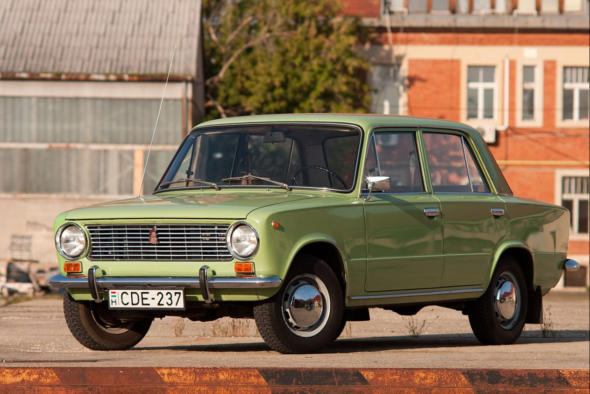
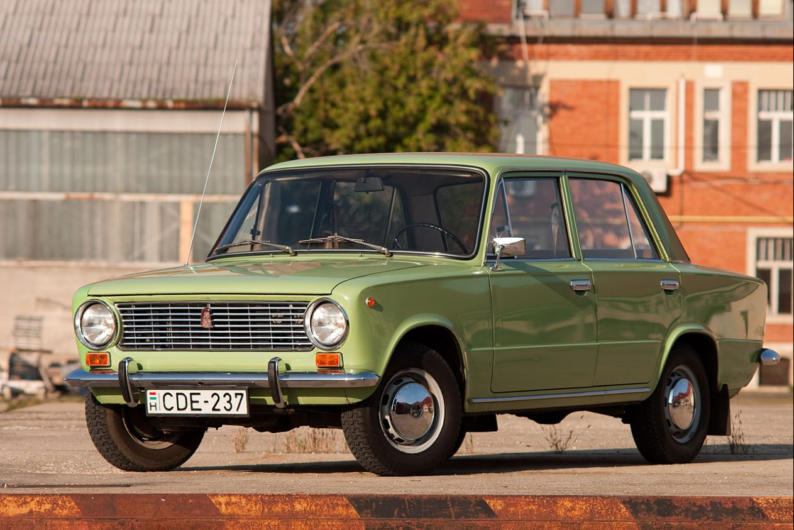
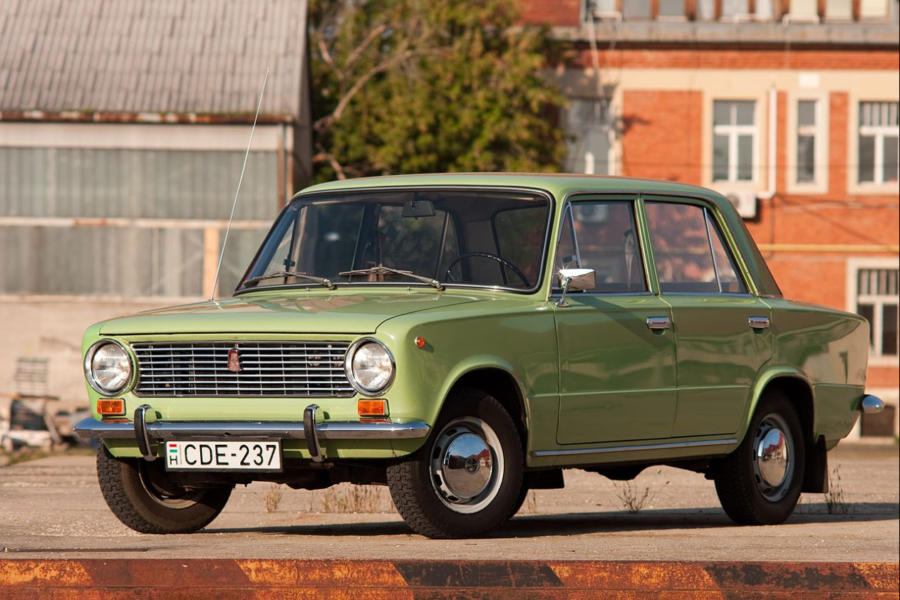
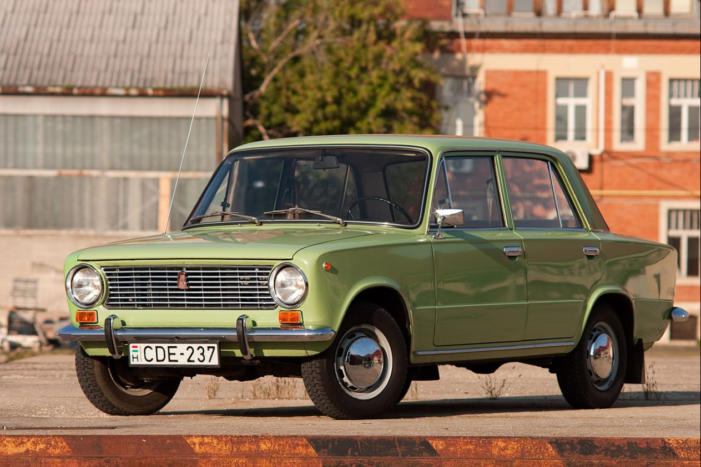

Lada (Cyrillic: Лада, Russian pronunciation: [ˈladə]), marketed as LADA, is a brand of cars manufactured by AvtoVAZ (originally VAZ), a Russian state-owned company. From January 2021 until May 2022, Lada was integrated with then sister brand Dacia into Renault's Lada-Dacia business unit. The first cars manufactured by AvtoVAZ were produced with technical assistance from Fiat and marketed under the Zhiguli designation. The Lada brand appeared in 1973, initially being overseas-focused before becoming AvtoVAZ's main brand for all markets in the 1990s. Renault took control of the brand in 2016. Technical assistance from the French company started in 2008, after it acquired a minority AvtoVAZ stake. Lada was re-acquired by the Russian government in 2022. The brand has a long history in Russia, and it is well known in post-Soviet countries; today, Lada vehicles are positioned as affordable and offering good value for money.